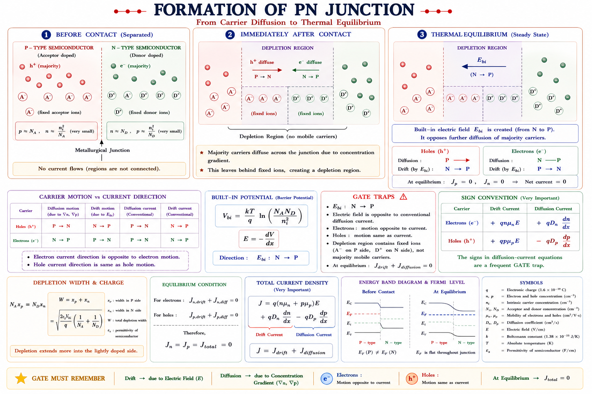
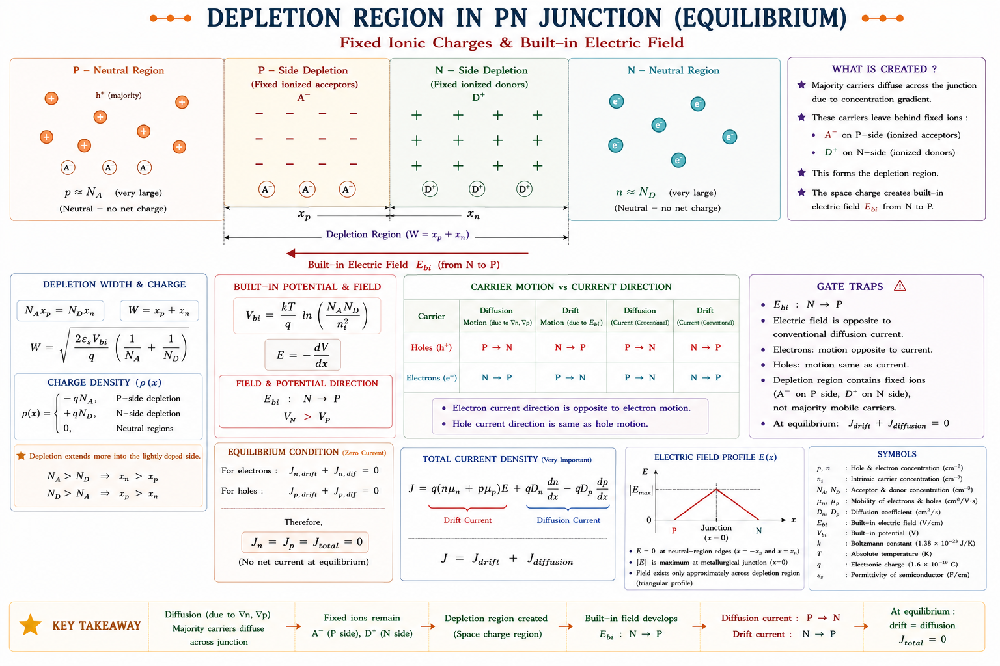
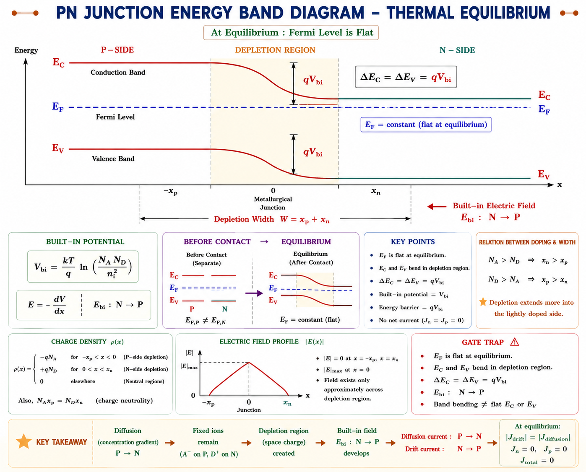
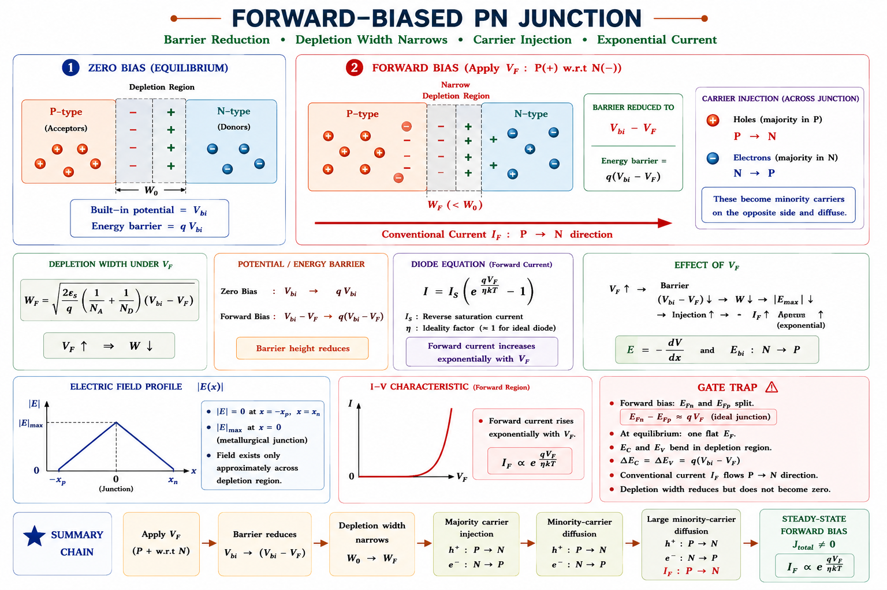
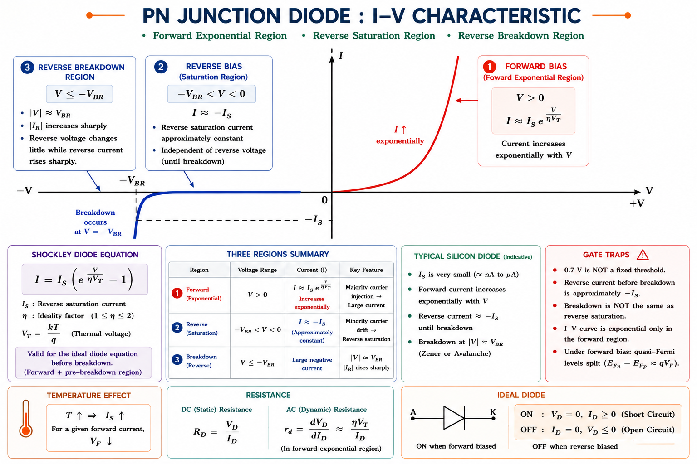

From silicon crystals to the fundamental building block of all modern electronics — understand how a simple junction between p-type and n-type semiconductors creates a one-way valve for current, and how every diode circuit, rectifier, and switching device traces back to this single concept.
Every transistor, solar cell, LED, laser, photodetector, and integrated circuit you will ever work with contains at least one p-n junction. Understanding this one interface explains almost all of modern electronics.
Imagine water flowing through a pipe — it moves freely in one direction but a one-way valve blocks it from going back. The p-n junction is electricity's version of that one-way valve. It is the most fundamental active interface in semiconductor physics, and it underlies every device you will study in this course.
From an engineering perspective, the p-n junction solves three crucial problems: it rectifies (converts AC to DC), it switches (turns current on and off at nanosecond speeds), and it controls (a small signal modifies a large current — the transistor principle). Every power supply, every microprocessor, every radio receiver starts here.
Think of two rooms separated by a door: one room is filled with people (holes in p-type) and the other with empty chairs (electrons in n-type). The moment you open the door, people rush across to fill empty chairs. This flow is called diffusion, and it is exactly what happens when p-type and n-type semiconductors are brought into metallurgical contact.
A p-n junction is created by introducing a p-type region and an n-type region within the same semiconductor crystal — most commonly silicon. In practice this is achieved by ion-implantation or diffusion doping, where one side is doped with acceptor atoms (boron, creating holes) and the other with donor atoms (phosphorus or arsenic, creating electrons). The interface between these two regions is the metallurgical junction.[1]

Fig. 2.1 — Diffusion of majority carriers across the metallurgical junction immediately after p-n contact is formed
Original diagram · Aarova AI · Concept: Streetman & Banerjee [2]
Diffusion is driven purely by concentration gradient, not by any electric field. Holes are abundant on the p-side and scarce on the n-side — so they diffuse toward the n-side. Electrons do the opposite. This is Fick's First Law of Diffusion applied to charge carriers: carriers flow from high concentration to low concentration regions.
As holes diffuse from p to n and electrons diffuse from n to p, something remarkable happens near the junction. The holes that cross over recombine with electrons on the n-side — and vice versa. This removes free carriers from a thin region on both sides of the junction, leaving behind only fixed ionised impurity atoms. The p-side is left with negatively charged acceptor ions (–), and the n-side is left with positively charged donor ions (+).
This region — depleted of free mobile carriers — is called the depletion region (also called the space-charge region or transition region). It acts like a parallel-plate capacitor with fixed ionic charges on either side.[1]

Fig. 3.1 — Depletion region showing fixed ionic charges (negative acceptors on p-side, positive donors on n-side) and the resulting built-in electric field pointing from N to P
The depletion width \(W\) extends a distance \(x_p\) into the p-side and \(x_n\) into the n-side. Charge neutrality requires that the total fixed charge on both sides must be equal:
where \(N_A\) is the acceptor concentration (cm⁻³) and \(N_D\) is the donor concentration (cm⁻³). This means the depletion region extends further into the lighter doped side. If the p-side is lightly doped (\(N_A \ll N_D\)), the depletion region is almost entirely in the p-side — a crucial design principle in one-sided abrupt junctions.
Here \(\varepsilon_s\) is the semiconductor permittivity \((= \varepsilon_r \varepsilon_0)\), \(V_{bi}\) is the built-in potential, and \(V\) is the applied voltage (positive for forward bias, negative for reverse bias). Notice that applying reverse bias increases \(W\), while forward bias decreases it.
Students often think the depletion region is the same width on both sides. It is NOT — the depletion width on each side is inversely proportional to the doping on that side. For a one-sided junction \((N_D \gg N_A)\), essentially the entire depletion region is in the lightly doped p-side: \(x_p \approx W,\; x_n \approx 0\).
The fixed ionic charges in the depletion region create an electric field pointing from the positive N-side toward the negative P-side. This field opposes further diffusion — holes trying to diffuse from p to n are pushed back by the field. Equilibrium is reached when the drift current due to this field exactly balances the diffusion current. The resulting potential difference across the depletion region is called the built-in potential \(V_{bi}\) (also called contact potential or diffusion potential).[2]
The built-in potential is NOT an externally measurable voltage — you cannot use a voltmeter to measure it, because the contact potential of the metal probes exactly cancels it. It is an internal potential barrier that must be overcome to allow majority carrier flow across the junction.
At thermal equilibrium, the Fermi level \(E_F\) must be constant throughout the entire semiconductor device — this is a fundamental thermodynamic requirement. The energy band diagram bends at the junction to accommodate this, and the amount of band bending equals \(qV_{bi}\).
where \(V_T = kT/q\) is the thermal voltage (≈ 26 mV at 300 K), \(k\) is Boltzmann's constant, \(T\) is absolute temperature in Kelvin, \(q\) is electron charge, and \(n_i\) is the intrinsic carrier concentration (≈ 1.5 × 10¹⁰ cm⁻³ for silicon at 300 K).

Fig. 4.1 — Energy band diagram at thermal equilibrium showing band bending in depletion region and flat Fermi level. The energy difference qVbi corresponds to the built-in potential barrier.
| Parameter | Silicon (Si) | Germanium (Ge) | GaAs |
|---|---|---|---|
| Bandgap Eg | 1.12 eV | 0.67 eV | 1.42 eV |
| ni at 300 K | 1.5 × 10¹⁰ cm⁻³ | 2.4 × 10¹³ cm⁻³ | 1.8 × 10⁶ cm⁻³ |
| Typical Vbi | 0.6 – 0.8 V | 0.2 – 0.4 V | 1.1 – 1.4 V |
| εr (relative) | 11.7 | 16.2 | 13.1 |
When you connect the positive terminal of a battery to the p-side and the negative terminal to the n-side, you are applying forward bias. Think of it as posting a helper at the junction: the external battery provides energy to push holes from p to n and electrons from n to p, fighting against the built-in field.
The external forward voltage \(V_F\) opposes the built-in potential. The effective barrier is now \((V_{bi} - V_F)\). As \(V_F\) increases, the barrier shrinks, the depletion region narrows, and majority carriers can easily diffuse across. This leads to an exponential increase in current with voltage.[1]

Fig. 5.1 — Forward-biased p-n junction: depletion width narrows, barrier reduces to (Vbi − VF), large diffusion current flows
"P gets Positive" — In forward bias, the Positive terminal connects to the P-side. The barrier goes down, current goes up. Think of pressing a spring (the barrier) down with your hand (the battery) — once you press enough, everything flows through.
The most important consequence of forward bias is minority carrier injection: holes are injected into the n-side (where they are minority carriers) and electrons are injected into the p-side. These injected minority carriers diffuse away from the junction and recombine with majority carriers. The diffusion of these excess minority carriers is what constitutes the diode current, and it decays exponentially with distance from the junction — described by the minority carrier diffusion length \(L_p\) and \(L_n\).[2]
Now flip the battery connections: positive terminal to n-side, negative to p-side. The external field now adds to the built-in field rather than opposing it. The barrier height becomes \((V_{bi} + V_R)\), the depletion region widens, and majority carrier diffusion is almost completely blocked.
Only a tiny reverse saturation current \(I_0\) (also written \(I_S\)) flows. This arises from thermally generated minority carriers in the neutral regions near the junction that are swept across by the electric field — holes generated in the n-side drift to the p-side, and electrons generated in the p-side drift to the n-side. Since this current depends on thermal generation (not on the applied voltage), it remains nearly constant with increasing reverse voltage — hence the name saturation current.[1]
| Condition | Depletion Width | Barrier | Current |
|---|---|---|---|
| No bias (V = 0) | W₀ | Vbi | Zero net current |
| Forward bias (+VF) | Narrows ↓ | Vbi − VF ↓ | Large ↑ Exponential |
| Reverse bias (−VR) | Widens ↑ | Vbi + VR ↑ | Tiny −I₀ (saturation) |
If the reverse voltage is increased beyond a critical value \(V_{BR}\) (breakdown voltage), the reverse current increases dramatically. Two mechanisms cause this:
Zener breakdown has a negative temperature coefficient; Avalanche has a positive one. A 5.6 V Zener diode is used in temperature-compensated reference circuits because at this voltage both mechanisms contribute equally, making temperature coefficient ≈ zero — a common GATE question!
By solving the minority carrier diffusion equations with appropriate boundary conditions under the depletion approximation, Shockley derived the fundamental I-V relationship for a p-n junction. This is the most important equation in semiconductor device physics.[1]
where:
The term \(I_0 e^{V/\eta V_T}\) represents the forward diffusion current — minority carriers injected across the junction. The term \(-I_0\) is the reverse thermal generation current — minority carriers swept back. At equilibrium (\(V=0\)), these are equal and net current is zero.
where \(A\) is the junction cross-sectional area, \(D_p, D_n\) are diffusion coefficients of holes and electrons, \(L_p = \sqrt{D_p \tau_p}\) and \(L_n = \sqrt{D_n \tau_n}\) are diffusion lengths, and \(\tau_p, \tau_n\) are minority carrier lifetimes. Notice \(I_0 \propto n_i^2 \propto e^{-E_g/kT}\) — so \(I_0\) doubles roughly every 10°C for silicon.

Fig. 7.1 — Complete I-V characteristic of a silicon p-n junction diode showing forward exponential region, reverse saturation, and breakdown. Cut-in voltage \(V_\gamma \approx 0.7\text{ V}\) for Si, \(\approx 0.3\text{ V}\) for Ge.
A p-n junction stores charge and therefore has capacitance. There are two distinct capacitances, each dominant in different operating regimes — this is a heavily tested GATE and IES topic.
The depletion region behaves exactly like a parallel-plate capacitor: fixed positive charges on the n-side, fixed negative charges on the p-side, separated by the depletion width \(W\). When the reverse voltage changes, \(W\) changes, and so does the stored charge — this is capacitive behaviour.[3]
where \(C_{T0}\) is the zero-bias transition capacitance, \(V\) is the applied voltage (negative for reverse bias), and \(m\) is the grading coefficient (0.5 for abrupt junction, 0.33 for linearly graded junction). CT is dominant in reverse bias and varies with voltage — this is the basis of the varactor diode used in voltage-controlled oscillators (VCOs).
In forward bias, minority carriers are stored in the neutral regions near the junction (injected holes in the n-side, injected electrons in the p-side). When the forward voltage changes, this stored minority charge changes — giving rise to diffusion capacitance, which represents the charge storage of these excess minority carriers.
where \(\tau_T\) is the transit time (minority carrier lifetime), \(g_m = I/\eta V_T\) is the diode small-signal transconductance, and \(I\) is the DC bias current. CD is dominant in forward bias and proportional to current. This is why switching a diode OFF from a forward-biased state takes time — the stored minority charge (reverse recovery charge \(Q_{rr}\)) must first be removed.
| Property | Transition Cap. CT | Diffusion Cap. CD |
|---|---|---|
| Also called | Depletion / Junction cap. | Storage / Minority carrier cap. |
| Dominant regime | Reverse bias | Forward bias |
| Physical origin | Fixed ionic charges in depletion layer | Stored minority carriers in neutral regions |
| Voltage dependence | C ∝ (Vbi−V)−m | C ∝ I (bias current) |
| Application | Varactor diode (VCO, tuning) | Switching speed limit |
| GATE importance | 🟢 Very High | 🟢 Very High |
The voltage-dependent depletion capacitance CT is exploited in varactor diodes (varicap diodes). By changing the reverse bias voltage electronically, you tune the resonant frequency of an LC circuit. Every FM radio tuner, every phase-locked loop, and every modern wireless device uses this principle.
Part (a) — Built-in potential:
Part (b) — Depletion width: Using \(\varepsilon_s = 11.7 \times 8.85\times10^{-12} = 1.036\times10^{-10}\) F/m and \(q = 1.6\times10^{-19}\) C:
Part (c) — Ratio: From charge neutrality \(N_A x_p = N_D x_n\):
So the depletion region extends 10× further into the lightly doped n-side. This is the one-sided junction principle.
Part (a) — Forward voltage for 1 mA:
Part (b) — Transition capacitance at reverse 5 V (abrupt junction, m = 0.5):
Note: for reverse bias, V = −VR, so the formula becomes \(1 + V_R/V_{bi}\) (denominator increases, capacitance decreases). This is physically consistent: wider depletion → smaller capacitance, just like a capacitor with wider gap.
Temperature change: ΔT = 75 − 25 = 50°C
Physical Reason: As temperature rises, \(n_i\) increases, so \(I_0\) increases dramatically. To maintain the same current, less external voltage is needed (the increased thermal energy does more of the work). The diode forward voltage decreases at approximately −2 mV/°C.
For silicon diode at constant current: dV/dT ≈ −2 mV/°C. For germanium: ≈ −1.8 mV/°C. This is a very frequently asked GATE fact — memorise it.
In a reverse-biased p-n junction, if the reverse bias voltage is doubled (from V₁ to 2V₁), the depletion capacitance CT of an abrupt junction changes by a factor of:
Explanation: For abrupt junction, \(C_T \propto (V_{bi}+V_R)^{-1/2}\). If \(V_R \gg V_{bi}\), then doubling VR gives \(C_T \propto (2V_R)^{-1/2} = C_{T,old}/\sqrt{2}\). So capacitance decreases by factor √2.
A silicon diode operates in forward bias at V = 0.6 V with current I = 2 mA (η = 1, T = 300 K). What is the new current when V is increased to 0.642 V?
Explanation: ΔV = 0.042 V. Number of doublings = ΔV / (VT·ln2) = 0.042/0.018 ≈ 2.33. New I ≈ 2 × 2^2.33 ≈ 2 × 5 ≈ 10 mA. (Exact: \(I \propto e^{\Delta V/V_T} = e^{0.042/0.026} = e^{1.615} \approx 5.03\), so new I ≈ 2 × 5 = 10 mA.)
In a p⁺n junction (p-side very heavily doped), where does most of the depletion region lie?
Explanation: From charge neutrality, \(N_A x_p = N_D x_n\). If \(N_A \gg N_D\), then \(x_p \approx 0\) and \(x_n \approx W\). The depletion region is almost entirely in the lightly doped n-side.
The diffusion capacitance of a p-n junction diode is significant only in:
Explanation: Diffusion capacitance \(C_D = g_m\tau_T = (I/\eta V_T)\tau_T\) is proportional to forward current I. In reverse bias, I ≈ –I₀ which is negligible, so CD ≈ 0. CD is significant only in forward bias where minority carriers are stored.
Which of the following statements about breakdown mechanisms in p-n junction is CORRECT?
Explanation: Zener breakdown (tunnelling) is enhanced at higher temperatures (more vibration → easier tunnelling), so VBR decreases → negative TC. Avalanche depends on mean free path; at higher T, more scattering reduces mean free path, so carriers need higher field (higher V) to trigger impact ionisation → positive TC.
Wrong: "CT is dominant in forward bias." Right: CT dominates in reverse bias; CD dominates in forward bias. In forward bias, CD can be 100× larger than CT at high currents.
Wrong: "Both sides of depletion region are equal." Right: The depletion width is inversely proportional to doping. In a p⁺n junction, almost all the depletion is in the n-side. Check which side is lighter doped.
Wrong: "We can measure Vbi with a voltmeter across the diode terminals." Right: Vbi is NOT externally measurable. The contact potential of metal-semiconductor contacts at the probes exactly cancels it. This is why a diode in thermal equilibrium shows zero terminal voltage.
Wrong: Using η = 2 (recombination ideality) in the I₀ saturation current derivation. Right: The standard Shockley formula (ideal diode) has η = 1. Real diodes have η between 1 and 2 depending on whether drift/diffusion or recombination/generation dominates. η = 2 implies recombination in depletion region dominates (common at low forward currents).
Wrong: "All breakdown voltages increase with temperature." Right: Zener (tunnelling, <5 V) has NEGATIVE TC; Avalanche (>7 V) has POSITIVE TC. A diode with VZ ≈ 5.6 V is used in temperature-compensated references because both effects balance.
In the formula \(C_T = C_{T0}/(1 - V/V_{bi})^m\), the voltage V is the applied junction voltage — positive for forward bias, negative for reverse bias. For reverse bias \(V = -V_R\), this gives \((1+V_R/V_{bi})^m\) in the denominator, which correctly makes CT smaller. Many students plug in VR with wrong sign and get CT > CT0, which is physically impossible for reverse bias.
Diffusion of majority carriers across metallurgical junction → depletion region forms → built-in field opposes further diffusion → equilibrium: drift = diffusion.
\(V_{bi} = V_T \ln(N_A N_D/n_i^2)\). For Si: \(\approx 0.6\text{–}0.8\text{ V}\). NOT externally measurable. Represents internal barrier. Flat Fermi level at equilibrium.
\(N_A x_p = N_D x_n\) (charge neutrality). \(W\) extends further into lighter doped side. \(W\downarrow\) forward bias. \(W\uparrow\) reverse bias. \(W \propto \sqrt{V_{bi}+V_R}\).
\(I = I_0(e^{V/\eta V_T}-1)\). \(V_T \approx 26\text{ mV}\) @300K. \(\eta=1\) ideal, \(\eta=2\) recombination. \(I\) doubles \(\approx\) every \(18\text{ mV}\) (\(\eta=1\)). \(dV/dT \approx -2\text{ mV/}^\circ\text{C}\) at const \(I\).
\(C_T\): reverse bias, depletion layer, \(C_T \propto (V_{bi}+V_R)^{-0.5}\) abrupt. \(C_D\): forward bias, stored minority carriers, \(C_D = I \tau_T / \eta V_T\).
Zener (<5 V): tunnelling, –TC. Avalanche (>7 V): impact ionisation, +TC. 5.6 V Zener: both balance → zero TC. \(V_{BR}\uparrow\) with doping\(\downarrow\) (avalanche).
"P gets Positive" — Forward bias: +ve to P-side. "ZANAT" — Zener = And Negative (Avalanche Temp coefficient). "CD Forward, CT Reverse" — Diffusion cap in forward, Transition cap in reverse. "Lighter = Wider" — lightly doped side has wider depletion extension.
Ask any doubt about p-n junction diodes — derivations, numericals, GATE concepts, or industry applications. Get instant expert answers.
Bipolar Junction Transistor (BJT) — two p-n junctions, active/saturation/cutoff modes, current gain β and α, Ebers-Moll model, small-signal h-parameter model, frequency response, and complete GATE & IES concepts including CE, CB, and CC configurations.
All technical content is derived from the following standard textbooks and resources. All explanations, derivations, diagrams and examples are original to Aarova AI.